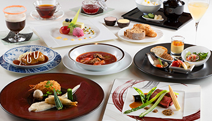
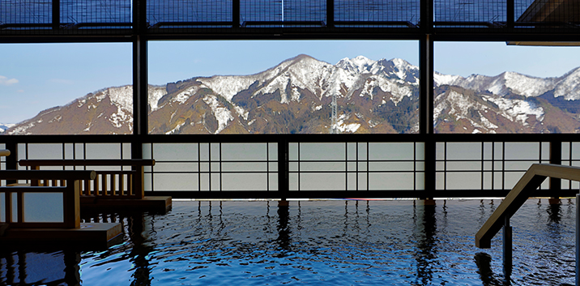
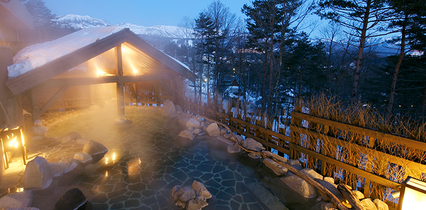
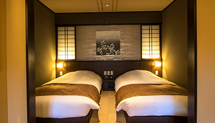
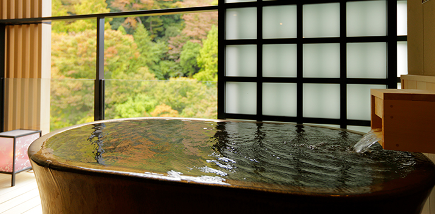
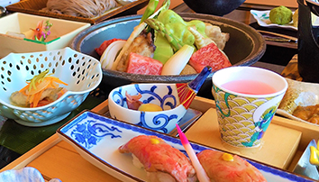
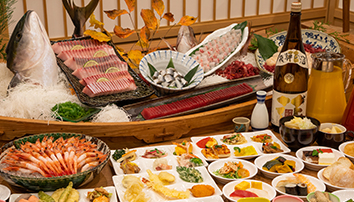
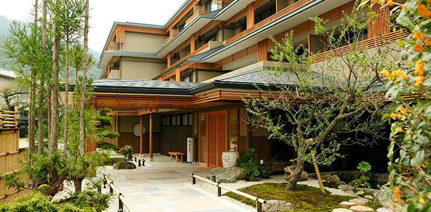

対象施設一覧
北海道
- デラックス
北海道/定山渓温泉 定山渓 ゆらく草庵
〒061-2301 北海道札幌市南区定山渓温泉東3丁目228-1
-
-
- 静穏なる渓谷にひっそりと佇む全室天然温泉客室風呂付の湯宿
-
奥座敷として知られる定山渓温泉は、150年以上の歴史を誇る温泉地。
渓谷が見せる四季折々の鮮やかな美と北海道を代表する湯を、その深い静寂のなかお愉しみください。
全室天然温泉客室風呂付き。
見どころへのアクセス
- 定山渓神社 徒歩約2分
- 定山源泉公園 徒歩約6分
- 定山渓ダム 車で約6分
※特別宿泊プランは、「平日限定」・「室数限定」の
ご利用となります。
ご希望のお日にちに空室がない場合、
通常プランであればご利用可能な場合もございますので、ご確認ください。
- デラックス
北海道/阿寒 ラビスタ阿寒川
〒085-0468 北海道釧路市阿寒町オクルシュベ3-1
-
-
- ただ、川と温泉があるだけの森に。
- 阿寒川の清らかな流れと、その奥に広がる深い森。
- ありのままの大自然とともに過ごすことこそが、
ここでは何よりの贅沢。 - 川の畔に湧く源泉を浴びながら、手つかずの自然美を心ゆくまでご堪能ください。
見どころへのアクセス
- 阿寒湖 車で約15分
- 阿寒湖アイヌシアターイコロ 車で約10分
- 阿寒丹頂の里（道の駅） 車で約35分
※特別宿泊プランは、「平日限定」・「室数限定」の
ご利用となります。
ご希望のお日にちに空室がない場合、
通常プランであればご利用可能な場合もございますので、ご確認ください。
- スタンダード
北海道/旭岳温泉 ラビスタ大雪山
〒071-1472 北海道上川郡東川町1418
-
-
- "神々が遊ぶ庭"旭岳を望み
自然に魅せられる山岳リゾート - 大雪山の山懐に抱かれた山荘ホテル。
- ヨーロッパの山岳リゾートを思わせるクラシカルな館内では、大雪山の主峰・旭岳の雄大な眺望をお愉しみいただけます。
- 北の自然と味覚を満喫する特別な休日を。
見どころへのアクセス
- 旭岳 / 旭岳ロープウェイ 徒歩約10分
- 旭山動物園 車で約50分
- 青い池 車で約50分
- "神々が遊ぶ庭"旭岳を望み
※特別宿泊プランは、「平日限定」・「室数限定」の
ご利用となります。
ご希望のお日にちに空室がない場合、
通常プランであればご利用可能な場合もございますので、ご確認ください。
- スタンダード
北海道/函館 ラビスタ函館ベイ
〒040-0065 北海道函館市豊川町12-6
-
-
- 函館の夜景を満喫、
「朝食の美味しいホテル」日本一 - 函館ベイエリアに位置し、観光やビジネスの拠点に最適なホテルリゾート。
- レトロモダンな空間が函館の旅を優雅に演出します。
- 宝石のような夜景を眺めながら、ロマンチックな夜をお過ごしください。
見どころへのアクセス
- 金森赤レンガ倉庫 徒歩約1分
- 函館朝市 徒歩約10分
- 旧北海道庁函館市庁庁舎 車で約10分
- 函館の夜景を満喫、
※特別宿泊プランは、「平日限定」・「室数限定」の
ご利用となります。
ご希望のお日にちに空室がない場合、
通常プランであればご利用可能な場合もございますので、ご確認ください。
- デラックス
北海道/函館 ラビスタ函館ベイ ANNEX
〒040-0064 北海道函館市大手町5-23
-

-
- 贅を知る大人のための静謐な空間に寛ぐ。ラビスタ函館ベイの特別な別館
-
函館ベイエリアに2棟目となる『ラビスタ函館ベイANNEX』。
上層階の大浴場では函館山を目の前に、世界三大夜景に数えられる湯浴みを天然温泉とともに。 - 話題の豪華な朝食バイキングも、心ゆくまでご堪能いただけます。
見どころへのアクセス
- はこだて明治館 徒歩4分
- 函館山ロープウェイ 車で5分
- 五稜郭タワー（五稜郭公園） 車で15分
※特別宿泊プランは、「平日限定」・「室数限定」の
ご利用となります。
ご希望のお日にちに空室がない場合、
通常プランであればご利用可能な場合もございますので、ご確認ください。
東北
- プレミアム
秋田県/秋の宮温泉郷 湯けむりの宿 稲住温泉
〒019-0321
秋田県湯沢市秋ノ宮字山居野11
-
-
- 秋田最古の温泉郷に、
新しくも懐かしい湯宿が誕生 - 令和元年11月グランドオープン。
- 秋田県最古の温泉地として伝えられる秋の宮温泉郷。
- その中でも数多くの文化人や著名人に愛されてきた昭和の名宿「稲住温泉」が、
共立リゾートの上質な湯宿として甦りました。 - ※ご宿泊は中学生以上のお客様のみとなります。
見どころへのアクセス
- 秋の宮温泉郷 徒歩約1分
- 道の駅 おがち 小町の郷 車で約20分
- 小安峡大噴湯 車で約50分
- 秋田最古の温泉郷に、
※特別宿泊プランは、「平日限定」・「室数限定」の
ご利用となります。
ご希望のお日にちに空室がない場合、
通常プランであればご利用可能な場合もございますので、ご確認ください。
- スタンダード
宮城県/鳴子温泉 鳴子温泉 湯元 吉祥
〒989-6823 宮城県大崎市鳴子温泉字湯元58-10
-
-
- “温泉の贅”をたしなむ。
- 千年余の時を刻む鳴子温泉。
- その特別席ともいえる高台にて、みちのく随一の名湯とともに、遥かに見渡す雄大な眺めや奥州らしい美味と銘酒、静寂の中でゆったりと流れる時に癒される湯宿。
見どころへのアクセス
- 鳴子峡 車で約5分
- 日本こけし館 電車・バスで約5分
- 潟沼 車で約10分
※特別宿泊プランは、「平日限定」・「室数限定」の
ご利用となります。
ご希望のお日にちに空室がない場合、
通常プランであればご利用可能な場合もございますので、ご確認ください。
関東・甲信越
- デラックス
神奈川県/観音崎 ラビスタ観音崎テラス
〒239-0811
神奈川県横須賀市走水2-1157-2
-
-
-
眺望という名のホテル“ラビスタ”
都心から約1時間、
横須賀・観音崎にオープン。
- 多くのお客様に愛され、昨年9月に惜しまれつつクローズした「観音崎京急ホテル」が、共立リゾート“ラビスタ”ブランドとして、リニューアルオープン。
- オーシャンビューの客室から望む絶景、天然温泉眺望露天風呂はそのままに、新たに生まれ変わった「ラビスタ観音崎テラス」、どうぞご期待ください。
見どころへのアクセス
- 横須賀美術館 神奈川県横須賀市鴨居4丁目1
徒歩約4分 - 浦賀の渡し 横須賀市東浦賀2-4-21 車で8分
- 馬堀海岸遊歩道 神奈川県横須賀市馬堀海岸1
徒歩約4分
-
眺望という名のホテル“ラビスタ”
ご希望のプランを下記より選んで
ご予約ください。
※特別宿泊プランは、「平日限定」・「室数限定」の
ご利用となります。
ご希望のお日にちに空室がない場合、
通常プランであればご利用可能な場合もございます
ので、ご確認ください。
- デラックス
東京都/豊洲 ラビスタ東京ベイ
〒135-0061 東京都江東区豊洲6-4-40
-
-
-
東京ベイ、美しい眺めのアーバンリゾート
進化する町“豊洲”、温泉×夜景でパワーチャージ - 東京湾に浮かぶウォーターフロントリゾートホテルが誕生。最上階に男女別の大浴場から望む首都・東京の摩天楼が彩る夜景は“ラビスタ”の名にふさわしい眺望。
- 朝食は豊洲市場の魅力満載。新鮮な海鮮や旬菜をビュッフェスタイルにてお召し上がりいただけます。
見どころへのアクセス
- 豊洲市場 徒歩約4分
- 東京ビッグサイト 車で約7分
- お台場海浜公園 車で約7分
-
東京ベイ、美しい眺めのアーバンリゾート
※特別宿泊プランは、「平日限定」・「室数限定」の
ご利用となります。
ご希望のお日にちに空室がない場合、
通常プランであればご利用可能な場合もございますので、ご確認ください。
- デラックス
栃木県/那須塩原 塩の湯温泉 蓮月
〒329-2921 栃木県那須塩原市塩原塩の湯1340-3
-
-
-
落差約30ｍの渓谷に佇む秘湯の湯宿
大自然に抱かれる癒しのひととき - 専用スロープカーで渓谷を下るとそこは大自然に包まれた絶景が広がります。
- 全室に天然温泉客室風呂を配した贅沢な設え。
- 四季の彩りを感じながら効能豊かな天然温泉を、ゆっくりとお愉しみください。
見どころへのアクセス
- 七ツ岩吊橋 車で約2分
- 源三窟 車で約5分
- 箱の森プレイパーク 車で約14分
-
落差約30ｍの渓谷に佇む秘湯の湯宿
ご希望のプランを下記3つより選んで
ご予約ください！
プランＡ
※本プランは、
A『湯めぐりプラン』：IN14：00～
OUT～10：00
（ご夕食時間17：30～）でのご案内と
なります。
滞在時間
チェックイン 14:00から
チェックアウト 10:00まで
※特別宿泊プランは、「平日限定」・「室数限定」の
ご利用となります。
ご希望のお日にちに空室がない場合、
通常プランであればご利用可能な場合もございますので、ご確認ください。
- プレミアム
群馬県/草津温泉 ラビスタ草津ヒルズ
〒377-1711 群馬県吾妻郡草津町大字草津226-15
-
- 
-
-
草津温泉街を見下ろす高台に欧風リゾートホテル
全室天然温泉露天風呂付 - 由緒ある温泉地で出逢う、新たな息吹。
- 草津温泉初！最上階に眺望浴場、全客室にも天然温泉露天風呂付き。
- 草津温泉街を見下ろす高台に眺望の宿「ラビスタ」が誕生しました。
- ※ご宿泊は中学生以上のお客様のみとなります。
見どころへのアクセス
- 湯畑 車で約5分
- 白根神社 車で約5分
- 草津ベルツ記念館 車で約5分
-
草津温泉街を見下ろす高台に欧風リゾートホテル
※特別宿泊プランは、「平日限定」・「室数限定」の
ご利用となります。
ご希望のお日にちに空室がない場合、
通常プランであればご利用可能な場合もございますので、ご確認ください。
- デラックス
新潟県/越後湯沢温泉 湯けむりの宿 雪の花
〒949-6101 新潟県南魚沼郡湯沢町大字湯沢317-1
-

-
- 越後湯沢駅から徒歩3分、
上質な大人の湯宿 - 川端康成の小説「雪国」の舞台となったことでも知られる越後湯沢。駅から徒歩3分ほどの好立地に建つ上質な湯・食・癒しを愉しむ大人の湯宿。
見どころへのアクセス
- 湯沢高原ロープウェイ 高山植物園アルプの里
車で約3分 - ぽんしゅ館 徒歩約3分
- 清津峡 車で約25分
- 越後湯沢駅から徒歩3分、
※特別宿泊プランは、「平日限定」・「室数限定」の
ご利用となります。
ご希望のお日にちに空室がない場合、
通常プランであればご利用可能な場合もございますので、ご確認ください。
- デラックス
群馬県/草津温泉 湯宿 季の庭
〒377-1711 群馬県吾妻郡草津町大字草津白根464-214
-
-
- 全室温泉露天風呂付、
上質な寛ぎのひと時 - 草津の名湯を、より贅沢に、よりプライベート愉しみたい方にオススメの湯宿。
- 客室露天風呂での優雅な湯浴みや、23種類の多彩な風呂での湯めぐりなど、温泉三昧の一日をゆっくりお過ごしください。
見どころへのアクセス
- 湯畑 車で約5分
- 熱乃湯 車で約5分
- 西の河原公園 徒歩約30分
- 全室温泉露天風呂付、
※特別宿泊プランは、「平日限定」・「室数限定」の
ご利用となります。
ご希望のお日にちに空室がない場合、
通常プランであればご利用可能な場合もございますので、ご確認ください。
- デラックス
山梨県/富士河口湖温泉 ラビスタ富士河口湖
〒401-0304
山梨県南都留郡富士河口湖町河口2395
-
-
- 南仏プロヴァンスが薫る館
- 南仏プロヴァンス薫る瀟洒な館で優美な富士と河口湖を望む。
- 自家源泉の湯と甲州の恵みを愉しみ心のおもむくままに絶景を愛でる贅沢な大人の時間を。
見どころへのアクセス
- 富士山パノラマロープウェイ 車で約5分
- 河口湖 音楽と森の美術館 車で約5分
- 河口湖クラフトパーク 徒歩約10分
※特別宿泊プランは、「平日限定」・「室数限定」の
ご利用となります。
ご希望のお日にちに空室がない場合、
通常プランであればご利用可能な場合もございますので、ご確認ください。
- スタンダード
長野県/軽井沢 ルシアン旧軽井沢
〒389-0102 長野県北佐久郡軽井沢町大字軽井沢
1323-111
-
-
- 別荘地として名高い旧軽井沢の
本格ペットホテル - “ルシアン”とはフランス語で“犬”のこと。
- 2017年10月、旧軽井沢に誕生した愛犬と一緒に宿泊できるホテルです。
- ドッグランやペットバスなど、愛犬にも快適な設備やサービスが充実しています。
見どころへのアクセス
- 軽井沢・プリンスショッピングプラザ 車で約5分
- 雲場池 車で約5分
- ハルニレテラス 車で約12分
- 別荘地として名高い旧軽井沢の
※特別宿泊プランは、「平日限定」・「室数限定」の
ご利用となります。
ご希望のお日にちに空室がない場合、
通常プランであればご利用可能な場合もございますので、ご確認ください。
- カジュアル
群馬県/草津温泉 お宿 木の葉
〒377-1711 群馬県吾妻郡草津町大字草津白根464-214
-

-
- ふたつの源泉、
23種のお風呂で湯めぐり三昧 - シンプルながらも温もりあふれる客室やセミバイキング形式のお食事で、気軽に愉しめる新しい湯治スタイルをご提案。
- 23種類の湯めぐりで、草津の湯を心ゆくまでご堪能ください。
見どころへのアクセス
- 草津温泉らくご 車で約10分
- 草津熱帯圏 徒歩約15分
- 草津ガラス蔵 徒歩約20分
- ふたつの源泉、
※特別宿泊プランは、「平日限定」・「室数限定」の
ご利用となります。
ご希望のお日にちに空室がない場合、
通常プランであればご利用可能な場合もございますので、ご確認ください。
- カジュアル
栃木県/那須高原 ウェルネスの森 那須
〒325-0304 栃木県那須郡那須町高久甲6437
-
-
- 雄大な自然に囲まれた高原リゾート
- 那須高原の自然と調和する気品あふれる空間で、おひとりさまからご家族、ペット連れまで、思い思いの滞在をお約束。源泉かけ流しのお風呂で、極上のリラクゼーションを。
見どころへのアクセス
- りんどう湖ファミリー牧場 車で約8分
- 那須ステンドグラス美術館 車で約10分
- 那須ロープウェイ 車で約45分
※特別宿泊プランは、「平日限定」・「室数限定」の
ご利用となります。
ご希望のお日にちに空室がない場合、
通常プランであればご利用可能な場合もございますので、ご確認ください。
箱根
- プレミアム
神奈川県/箱根強羅温泉 雪月花別邸 翠雲
〒250-0408 神奈川県足柄下郡箱根町強羅1300-61
-
- 
-
- 全室檜の天然温泉露天風呂付、
「季の湯 雪月花」のハイクラスな“別邸” - 四季の移ろいをより繊細に感じていただけるよう、二十四節気を大切にしたおもてなしでお迎えします。
- 共立リゾートの宿では最高クラスの上質な空間で、心潤す時をお愉しみください。
- ※ご宿泊は中学生以上のお客様のみとなります。
見どころへのアクセス
- 箱根強羅公園 徒歩約1分
- ポーラ美術館 車で約15分
- 箱根関所 車で約30分
- 全室檜の天然温泉露天風呂付、
※特別宿泊プランは、「平日限定」・「室数限定」の
ご利用となります。
ご希望のお日にちに空室がない場合、
通常プランであればご利用可能な場合もございますので、ご確認ください。
- スタンダード
神奈川県/箱根強羅温泉 季の湯 雪月花
〒250-0408 神奈川県足柄下郡箱根町強羅1300-34
-
-
- 強羅駅前、全158室に檜の客室露天風呂
- 強羅駅から徒歩1分の好立地。
- 158ある客室のすべてに檜の露天風呂が付き、館内全体が風雅な趣に満ちあふれています。
- 源泉かけ流しの大浴場をはじめ、個性豊かな湯船の数々が旅の疲れを癒します。
見どころへのアクセス
- 箱根 海賊船 元箱根港 車・バスで約20分
- 大涌谷 車・バスで約15分
- 箱根ガラスの森美術館 車・バスで約15分
※特別宿泊プランは、「平日限定」・「室数限定」の
ご利用となります。
ご希望のお日にちに空室がない場合、
通常プランであればご利用可能な場合もございますので、ご確認ください。
- スタンダード
神奈川県/箱根湯本温泉 月の宿 紗ら
〒250-0311 神奈川県足柄下郡箱根町湯本588-1
-

-
- 「和モダン」を設えた、
新しい癒しの湯宿 - 和のくつろぎと洋の快適性をミックスしたホテルスタイルのおもてなしが新しい、“デザイナーズ湯宿”。
- 寄木細工や月をモチーフにした意匠で、洗練された和モダンな空間を演出します。
- ※ご宿泊は小学生以上のお客様のみとなります
見どころへのアクセス
- 早雲寺 徒歩約15分
- 駒ヶ岳ロープウェイ 車で約20分
- 箱根ラリック美術館 車で約30分
- 「和モダン」を設えた、
※特別宿泊プランは、「平日限定」・「室数限定」の
ご利用となります。
ご希望のお日にちに空室がない場合、
通常プランであればご利用可能な場合もございますので、ご確認ください。
- スタンダード
神奈川県/箱根小涌谷温泉 水の音
〒250-0406
神奈川県足柄下郡箱根町小涌谷492-23
-
-
- 水の音色と2種類の源泉、
緑の中に佇む癒しの湯宿 - 本館「水月の庄」と新館「水花の庄」。
- 異なる趣の2つの庄が、極上の休日の舞台に。
- 玄関の水琴窟やロビーを流れる小川など、館内に響きわたる清らかな水の音が、ゲストのみなさまをお出迎えします。
見どころへのアクセス
- 彫刻の森美術館 車で約5分
- 千条の滝 徒歩約15分
- 星の王子さまミュージアム 車で約20分
- 水の音色と2種類の源泉、
※特別宿泊プランは、「平日限定」・「室数限定」の
ご利用となります。
ご希望のお日にちに空室がない場合、
通常プランであればご利用可能な場合もございますので、ご確認ください。
伊豆
- プレミアム
静岡県/伊東温泉 淘心庵 米屋
〒414-0054 静岡県伊東市鎌田280
-
-
- 静寂さ漂う、和のオーベルジュ
- 竹林のなかにひっそりと建つ隠れ家のような湯宿。
- 竹の葉の奏でる心地よい音色が、お客さまを非日常の世界へと誘います。
- 随所で感じる伊豆の四季と和の情緒。
- 心を込めたおもてなしに酔いしれてください。
見どころへのアクセス
- 東海館 徒歩約10分
- 大室山 車で約25分
- ドルフィンファンタジー 車で約10分
※特別宿泊プランは、「平日限定」・「室数限定」の
ご利用となります。
ご希望のお日にちに空室がない場合、
通常プランであればご利用可能な場合もございますので、ご確認ください。
- デラックス
静岡県/修善寺温泉 湯回廊 菊屋
〒410-2416 静岡県伊豆市修善寺874-1
-
-
-
- 創業400年の情緒と風格漂う癒し宿
- 創業から400年、数多くの著名人が訪れてきた老舗宿。
- 夏目漱石が静養した本館客室も当時の面影のままに現存しています。
- 館内にめぐらされた“湯回廊”をわたって、歴史感じる湯の旅へご案内します。
見どころへのアクセス
- 竹林の小径 徒歩約10分
- 修善寺虹の郷 車で約5分
- 伊豆の国パノラマパーク 車で約15分

※特別宿泊プランは、「平日限定」・「室数限定」の
ご利用となります。
ご希望のお日にちに空室がない場合、
通常プランであればご利用可能な場合もございますので、ご確認ください。
- スタンダード
静岡県/伊豆高原 杜の湯 きらの里
〒413-0232 静岡県伊東市八幡野1326-5
-
-
- 心に残るふるさとの原風景と充実の湯殿
- 緑豊かな傾斜地に広がる田畑と畦道。
- 木立の間に見え隠れする古民家風の建物。
- そんな懐かしい里山の風景を、ここ八幡野の地に再現しました。
- 故郷に帰ったような心温まる休日をお過ごしください。
見どころへのアクセス
- 大室山登山リフト 車で約10分
- 伊豆シャボテン公園 車で約10分
- 伊豆ぐらんぱる公園 車で約12分
※特別宿泊プランは、「平日限定」・「室数限定」の
ご利用となります。
ご希望のお日にちに空室がない場合、
通常プランであればご利用可能な場合もございますので、ご確認ください。
- カジュアル
静岡県/伊東温泉 ウェルネスの森 伊東
〒414-0055 静岡県伊東市岡1348-3
-
-
- ファミリーやグループで愉しむ
アクティブな休日 - 源泉かけ流しのお風呂やクアハウス、わが家のように安らげるゆとりの客室が、ゲストのみなさまに癒しのひとときをご提供。
- ファミリーやカップル、友人同士で気兼ねなく過ごせる、憩いのスパリゾートです。
見どころへのアクセス
- 伊豆ぐらんぱる公園 車で約20分
- 伊豆シャボテン公園 車で約20分
- 伊豆テディベア・ミュージアム 車で約25分
- ファミリーやグループで愉しむ
※特別宿泊プランは、「平日限定」・「室数限定」の
ご利用となります。
ご希望のお日にちに空室がない場合、
通常プランであればご利用可能な場合もございますので、ご確認ください。
- カジュアル
静岡県/修善寺温泉 湯めぐりの宿 桂川
〒410-2416 静岡県伊豆市修善寺860
-
-
- 7つの貸切風呂で充実の湯めぐりを
- 館内にはそれぞれに異なった趣向を凝らした7つもの貸切風呂をご用意。プライベートな空間を無料でご利用いただけます。お食事は伊豆の旬の素材を中心に、彩り豊かにご用意。卓球など無料でご利用いただける娯楽施設もございます。
見どころへのアクセス
- 独鈷の湯 徒歩約8分
- 修善寺 徒歩約9分
- 竹林の小径 徒歩約10分
※特別宿泊プランは、「平日限定」・「室数限定」の
ご利用となります。
ご希望のお日にちに空室がない場合、
通常プランであればご利用可能な場合もございますので、ご確認ください。
東海・北陸
- デラックス
三重県/伊勢 いにしえの宿 伊久
〒516-0023 三重県伊勢市宇治館町字岩井田山679-2
-
-
- 癒しの杜を間近に臨む、全室露天風呂付
- 伊勢神宮の内宮まで徒歩15分。
- 伊勢の伝統文化がそこかしこに息づくお宿です。
- 閉門直前の夕間詰めや、開門すぐの早朝参り。
- ここに泊まるからこそ叶えられる、特別なお伊勢参りへお出かけください。
見どころへのアクセス
- 伊勢神宮内宮（皇大神宮） 徒歩約15分
- おかげ横丁 徒歩約10分
- 伊勢夫婦岩ふれあい水族館 車で約20分
※特別宿泊プランは、「平日限定」・「室数限定」の
ご利用となります。
ご希望のお日にちに空室がない場合、
通常プランであればご利用可能な場合もございますので、ご確認ください。
- デラックス
石川県/和倉温泉 白鷺の湯 能登 海舟
〒926-0175 石川県七尾市和倉町ワ部31
-

-
-
-
伝統と格式ある和倉温泉に2021年3月、
共立リゾート北陸初に湯宿が開業 - 2021年3月オープン。開湯1200年の伝統と格式ある和倉温泉の地に、共立リゾートの湯宿が北陸初出店。
- 南紀白浜の太平洋を望む「浜千鳥の湯 海舟」につづく2棟目の「海舟」は能登の七尾湾に面したオーシャンフロントの宿。
- ※ご宿泊は小学生以上のお客様のみ、大人と同料金となります。
見どころへのアクセス
- 道の駅 能登食祭市場 車で約20分
- 石川県能登島ガラス美術館 車で約20分
- のとじま水族館 車で約25分
-
伝統と格式ある和倉温泉に2021年3月、

※特別宿泊プランは、「平日限定」・「室数限定」の
ご利用となります。
ご希望のお日にちに空室がない場合、
通常プランであればご利用可能な場合もございますので、ご確認ください。
- スタンダード
岐阜県/平湯温泉 匠の宿 深山桜庵
〒506-1433 岐阜県高山市奥飛騨温泉郷平湯229
-
-
- 奥飛騨の山懐、匠が織りなす癒しの湯宿
- 奥飛騨の山懐に湧く秘湯・平湯温泉。
- その豊かな源泉を、北アルプス笠ヶ岳の景観とともにご堪能いただける湯宿です。
- 当地の銘木を使った大胆な木組みの建物が、飛騨ならではの風情を醸し出します。
見どころへのアクセス
- クマ牧場 車で約10分
- 平湯大滝 車で約10分
- 新穂高ロープウェイ 車で約30分
※特別宿泊プランは、「平日限定」・「室数限定」の
ご利用となります。
ご希望のお日にちに空室がない場合、
通常プランであればご利用可能な場合もございますので、ご確認ください。
- スタンダード
岐阜県/白川郷 御宿 結の庄
〒501-5625 岐阜県大野郡白川村飯島908-2
-
- 
-
- 世界遺産白川郷集落の玄関口に、
歴史と趣の薫る宿 - 世界遺産 白川郷の玄関口に人と人とを結ぶ“結”の心をコンセプトにした、歴史と趣の薫る宿「御宿 結の庄」。
- 合掌造りを模した佇まいの湯宿で天然温泉に癒されるくつろぎの滞在を。
見どころへのアクセス
- 世界遺産白川郷合掌造り集落 車で約10分
- であい橋 車で約10分
- 白川八幡神社 徒歩約15分
- 世界遺産白川郷集落の玄関口に、
※特別宿泊プランは、「平日限定」・「室数限定」の
ご利用となります。
ご希望のお日にちに空室がない場合、
通常プランであればご利用可能な場合もございますので、ご確認ください。
- カジュアル
岐阜県/飛騨高山温泉 飛騨花里の湯 高山桜庵
〒506-0026 岐阜県高山市花里町4-313
-
-
- 飛騨情緒に浸る、和のシティホテル
- 高山市の中心部に位置する、全館畳敷きの和のシティホテル。
- かけ流しの温泉や飛騨の郷土料理を優雅な雰囲気で愉しめるのはもちろん、
- 素泊まりやB＆Bなどカジュアルな滞在にもご利用いただけます。
見どころへのアクセス
- 高山市三町伝統的建造物群保存地区 徒歩約10分
- 櫻山八幡宮 徒歩約15分
- 城山公園 車で約10分
※特別宿泊プランは、「平日限定」・「室数限定」の
ご利用となります。
ご希望のお日にちに空室がない場合、
通常プランであればご利用可能な場合もございますので、ご確認ください。
- カジュアル
岐阜県/平湯温泉 深山桜庵別館 湯めぐりの宿 平湯館
〒506-1498 岐阜県高山市奥飛騨温泉郷平湯726
-
- 
-
- 源泉かけ流しの天然温泉を、
山の四季とともに -
２つの源泉を掛け合わせた温泉が、源泉掛け流しでお愉しみいただけます。
露天風呂をはじめ、東屋の外風呂、大浴場の内湯など、趣の異なるお風呂が合わせて8つ。
奥飛騨の季節の移ろいを肌で感じながらの湯浴みは格別です。
見どころへのアクセス
- 田上家住宅 車で約30分
- ガッタンゴー 車で約45分
- 乗鞍岳 車で約50分
- 源泉かけ流しの天然温泉を、
※特別宿泊プランは、「平日限定」・「室数限定」の
ご利用となります。
ご希望のお日にちに空室がない場合、
通常プランであればご利用可能な場合もございますので、ご確認ください。
関西
- プレミアム
兵庫県/城崎円山川温泉 銀花
〒669-6123 兵庫県豊岡市小島1177
-
-
- 川の流れと美食に癒される隠れ宿
- 城崎を流れる円山川のほとりに建ち、その悠々とした眺めとともに過ごす大人の宿。
- お部屋や露天風呂で感じる川面に浮かぶような一体感は格別。
- 松葉ガニや但馬牛など、食も贅沢にお楽しみください。
見どころへのアクセス
- 城崎マリンワールド 車で約6分
- 御待岬 車で約7分
- 玄武洞 車で約15分
※特別宿泊プランは、「平日限定」・「室数限定」の
ご利用となります。
ご希望のお日にちに空室がない場合、
通常プランであればご利用可能な場合もございますので、ご確認ください。
- デラックス
和歌山県/南紀白浜温泉 浜千鳥の湯 海舟
〒649-2211 和歌山県西牟婁郡白浜町1698-1
-
-
- 岬そのものが宿、
海を漂うような非日常の時間 - 太平洋に臨む岬の先端に建ち、宿そのものが大海原を行く舟のような『海舟』。
- シンボル「浜千鳥の湯」をはじめ、滞在中のあらゆるシーンで海を味わい尽くす、非日常の船旅へとお連れします。
見どころへのアクセス
- アドベンチャーワールド 車で約10分
- とれとれ市場 南紀白浜 車で約10分
- 円月島 車で約15分
- 岬そのものが宿、
※特別宿泊プランは、「平日限定」・「室数限定」の
ご利用となります。
ご希望のお日にちに空室がない場合、
通常プランであればご利用可能な場合もございますので、ご確認ください。
- スタンダード
京都府/嵐山温泉 京都 嵐山温泉 花伝抄
〒616-0003 京都府京都市西京区嵐山西一川町5-4
-

-
- 京の雅を愉しむ、嵐山の滞在
- 京都の景勝地・嵐山に建つ癒しの湯宿。
- 天然温泉の大湯屋や多彩な湯船の貸切湯屋で、充実の湯めぐりをお愉しみください。
- 西陣織をはじめ京都の伝統工芸や京情緒あふれる意匠が、館内を雅に彩ります。
見どころへのアクセス
- 嵐山公園 徒歩約5分
- 渡月橋 徒歩約10分
- 嵐山モンキーパークいわたやま 徒歩約15分
※特別宿泊プランは、「平日限定」・「室数限定」の
ご利用となります。
ご希望のお日にちに空室がない場合、
通常プランであればご利用可能な場合もございますので、ご確認ください。
- カジュアル
京都府/梅小路 京都 梅小路 花伝抄
〒600-8843 京都府京都市下京区朱雀内畑町41-10
-
-
- 京都嵐山温泉につづく2棟目の「花伝抄」が“梅小路”駅前に誕生。
- 世阿弥が記した「花伝書」の言葉
「秘すれば花なり」 - 秘するが如く散りばめられたこだわりが館内の随所に感じられることでしょう。
見どころへのアクセス
- 京都水族館 車で約2分
- 東寺 車で約5分
- 京都鉄道博物館 徒歩約5分
※特別宿泊プランは、「平日限定」・「室数限定」の
ご利用となります。
ご希望のお日にちに空室がない場合、
通常プランであればご利用可能な場合もございますので、ご確認ください。
中国・四国
- デラックス
島根県/出雲 いにしえの宿 佳雲
〒699-0721 島根県出雲市大社町修理免字本郷1443-1
-
-
- 全室客室風呂付き、
贅を尽くした和の湯宿 - あらゆるご縁を結ぶ出雲大社と、日の沈む聖地を巡る極上ステイにふさわしい、贅を尽くした湯宿。
- 館内を彩る伝統や伝説をモチーフとした意匠の数々が、悠久の時を越えて神話の世界へと誘います。
見どころへのアクセス
- 出雲大社 徒歩約8分
- 奉納山公園 車で約10分
- 稲佐の浜 徒歩約30分
- 全室客室風呂付き、
※特別宿泊プランは、「平日限定」・「室数限定」の
ご利用となります。
ご希望のお日にちに空室がない場合、
通常プランであればご利用可能な場合もございますので、ご確認ください。
- スタンダード
香川県/ことひら温泉 御宿 敷島館
〒766-0001
香川県仲多度郡琴平町川西713-1
-
-
- “こんぴらさん”の表参道に、
「敷島館」復活 - 金刀比羅宮の表参道に、かつて国の登録有形文化財に指定された「敷島館」が、「共立リゾート」四国初の宿として蘇りました。
- 旧敷島館の古材を用い、老舗旅館の佇まいを再現した外観からは古き良き“こんぴらさんの風情”が漂い、館内には共立リゾートの心地よい設えとおもてなしが。
- 多彩な湯処で天然温泉に癒される湯宿。
見どころへのアクセス
- 琴平山 徒歩約5分
- 瀬戸大橋記念公園 車で約35分
- 父母ヶ浜 車で約35分
- “こんぴらさん”の表参道に、
※特別宿泊プランは、「平日限定」・「室数限定」の
ご利用となります。
ご希望のお日にちに空室がない場合、
通常プランであればご利用可能な場合もございますので、ご確認ください。
- カジュアル
島根県/出雲 お宿 月夜のうさぎ
〒699-0721 島根県出雲市大社町修理免字本郷1443-1
-
-
- 落ち着きと華やぎがある、和のホテル
- あらゆるご縁を結ぶ出雲大社まで徒歩8分。
- 神話の舞台・稲佐の浜の荘厳な夕日や清々しい朝参りなど、出雲の魅力を堪能できます。
- 出会いのシンボルうさぎが愛らしい湯宿で、忘れられない出雲旅を。
見どころへのアクセス
- 日御碕神社 車で約25分
- 出雲日御碕灯台 車で約25分
- 出雲弥生の森博物館 車で約22分
※特別宿泊プランは、「平日限定」・「室数限定」の
ご利用となります。
ご希望のお日にちに空室がない場合、
通常プランであればご利用可能な場合もございますので、ご確認ください。
九州・沖縄
- デラックス
鹿児島県/霧島温泉 ラビスタ霧島ヒルズ
〒899-6603 鹿児島県霧島市牧園町高千穂3812-6
-
-
- 絶景の丘で、遥か南欧の風と出会う
- 錦江湾と桜島を望む霧島温泉郷の一等地に佇む「眺望（ラビスタ）」という名のプレミアム・リゾート。
- 南欧調の館は、全室天然温泉露天風呂付き。洋館でありながら、大浴場と貸切風呂は落ち着いた和の設え。
- 館内にはペットと泊まれる「ルシアンルーム」も併設。
見どころへのアクセス
- 霧島温泉市場 徒歩約10分
- 霧島アート牧場 車で約30分
- 霧島山麓丸池湧水 車で約30分

※特別宿泊プランは、「平日限定」・「室数限定」の
ご利用となります。
ご希望のお日にちに空室がない場合、
通常プランであればご利用可能な場合もございますので、ご確認ください。
- スタンダード
沖縄県/北谷町 ザ・ビーチタワー沖縄
〒904-0115 沖縄県中頭郡北谷町美浜8-6
-
-
- 日常からときはなたれる南の島の楽園
- 7色のブルーに輝く海と真っ白な砂浜。
- 県内最高層の24階建てホテルから眺める景色は、これぞ沖縄というべき絶景。
- 沖縄では珍しいかけ流しの温泉も愉しめる、究極のヒーリングリゾートです。
見どころへのアクセス
- 普天満宮 車で約15分
- 琉球村 車で約30分
- おきなわワールド 車で約40分
※特別宿泊プランは、「平日限定」・「室数限定」の
ご利用となります。
ご希望のお日にちに空室がない場合、
通常プランであればご利用可能な場合もございますので、ご確認ください。
ご予約はこちら
※ご予約の際に、お手元のご案内チラシに記載の「団体コード」が必要となります。
会員登録についての
お問合せは以下事務局まで
共立リゾート会員登録事務局
03-5295-7885
【営業時間】平日9:00～17:30
（土・日・祝日・年末年始を除く）
お電話で
ご予約の場合
共立リゾート予約センター
0800-888-1189
【営業時間】平日9:30～13:00 14:00～17:30
（土・日・祝日・年末年始を除く）
プランご利用の流れ
※時期・タイミングによりプラン自体のご用意がない場合がございます。あらかじめご了承ください。
WEBでご予約の場合
本サイトから会員登録を行ってください。
※ご登録の際に、「会社名・団体名」の欄に「団体コード」を必ず入力ください。
ご希望のお宿をお選びいただき、空室情報をご確認の上、ご予約を行ってください。
ご予約が完了いたしましたら、ご予約確認メールがご登録いただいたメールアドレスに届きます。
ご予約いただいたお宿へお越しください。
お電話でご予約の場合
下記フリーコールにお電話ください。
0800-888-1189
ご希望の宿泊日とお宿をお伝えください。
受付窓⼝にてお客様に代わり、会員登録〜ご予約をさせていただきます。
ご予約が完了いたしましたら、ご予約確認書をご希望の方のみFAXまたは郵送でご連絡させていただきます。
ご予約いただいたお宿へお越しください。
ご利用にあたって
- 本プランは、時期・タイミングによりプラン自体のご用意がない場合がございます。
- 本プランのご利用には会員登録が必要です。（登録後は共立メンテナンスホテル公式予約サイト会員になります。）
- ご予約は、会員様ご本人のみとさせていただきます。
- ご予約は、宿泊日前日の18:00までとなります。
1ヵ月＝31日とし、31日先までのご予約が可能です。
例）
1月1日時点でご予約可能な期間：1月2日～2月1日
2月1日時点でご予約可能な期間：2月2日～3月4日（うるう年は3月3日まで）
- 本プランでは、dポイントは付与されませんが、利用することは可能です。
- お支払いは、オンラインでの事前決済または施設にてチェックアウト時に現金・クレジットカードでの支払いとなります。
- 料金は、消費税・サービス料が含まれております。（別途、入湯税や宿泊税のお支払いが必要な場合がございます。）
- 子供料金につきましては施設ごとに異なります。施設によってはお子様のご予約を承っていない場合がございますので
ご了承ください。
（人数変更・日程変更・施設変更に対しても発生いたします。）
| 宿泊日の7日～5日前 | 宿泊日の4日～3日前 | 宿泊日の2日～1日前 | 当日 | 無連絡キャンセル |
|---|---|---|---|---|
| 宿泊料金の10％ | 宿泊料金の20％ | 宿泊料金の50％ | 宿泊料金の80％ | 宿泊料金の100％ |
| 宿泊日の7日～5日前 | 宿泊料金の10％ |
|---|---|
| 宿泊日の4日～3日前 | 宿泊料金の20％ |
| 宿泊日の2日～1日前 | 宿泊料金の50％ |
| 当日 | 宿泊料金の80％ |
| 無連絡キャンセル | 宿泊料金の100％ |
※変更・キャンセルのご連絡は、当プランWEBサイト上、または受付時間内に記載のフリーコールまでご連絡ください。それ以降は施設へ直接お電話ください。
※キャンセル料金が発生した際は、ご予約された会員様へ施設よりご連絡させていただきます。
※「癒湯自適 直幸往復便」プランご利用時のキャンセルにつきましては、「直幸往復便」プランのキャンセルに準じます。
- 施設に関するご質問やアレルギー食材のご相談などございましたら、ご予約後に施設まで直接ご連絡ください。
- その他の特典や優待とは併用いただけません。
- ご予約の際には団体コードが必要です。